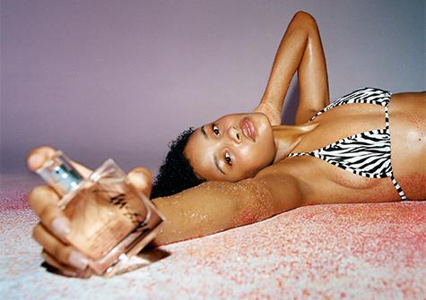

A multilayered idea with a clear and sharp point of view, a method in all the apparent madness. Stüssy Summer ‘21 is a collection of consistent and honest garments for any and every situation.
Gum Crush… a surf video by Sara Taylor & Charlie McHarg.
Stüssy and Our Legacy combine for another collection of pared-back seasonless staples. Quality textiles and classic cuts in neutral leaning color palettes give these garments a quiet, confident, and contemporary feeling

The Stüssy Kyoto Chapter is the latest shop to join the brand’s worldwide Chapter network conceptualized by WP&A, complimenting the design direction of their Milan, Shanghai and Nagoya Chapter locations.
Stüssy and Oakley come together for two flavors of Oakley Eye JacketTM Redux sunglasses. A modern update on the 1994 original, this new version boasts the time-tested oval silhouette and Prizm Lens Technology in sand or black.
Stüssy and GORE-TEX® have come together again to create a durable, waterproof three-piece collection ready for the elements. The Wading Shell Jacket, Cargo Shell Pants, and Storm Shell Hat are all done in both Realtree MAX-5® camouflage print and matte black.

Once again, Stüssy and Nike have joined forces for a Huarache silhouette, a staple since its 1991 debut. The new take comes in a distinct earth-toned colorway, featuring a nubuck and textile upper, outer cage, elastic heel strap for support, and a foam sole with encapsulated Nike Air cushioning.
.jpg)
A seasonally appropriate wardrobe for everybody who is anybody. Simple essentials in smart cuts, durable fabrics, and dizzying patterns. Angle yourself towards the sun.

Stüssy has collaborated with Comme des Garçons Parfums on a fragrance that captures the mood, essence, and lifestyle of Laguna Beach. Natural marine freshness, moss, and atlas cedar mix with white solar flowers to create an all-new, organic, laid back vibrational force.
A collection engineered for the elements done in translucent ripstop with a gradient green print. The main body fabric is made from at least 75% recycled nylon and insulated with Thermore® EcoDown®, a down alternative made from 100% recycled polyester.
Lloyd Mitchell opened the doors to Lloyd’s barbershop in 1979 and it’s become a staple of Toronto’s Bloor-Bathurst neighborhood ever since. The shop quickly became the go-to spot and a cultural hub for Toronto’s fast-growing Caribbean community. Lenox Mitchell, Lloyd’s son, came into the family business in 1989 after immigrating from Jamaica in 1986.
For Holiday '20, Harris Tweed lends it's traditionally made fabrics to classic Stüssy silhouettes. A sport coat, beach pant, and a fitted cap are done in a unique Harris Tweed plaid paneling.
Stüssy and Nike return with a third collection of versatile co-branded gear for the end of 2020. At the center of the release is Stüssy’s take on the iconic Nike Air Force 1 silhouette, this time redone in durable hemp and made in two tonal colorways: fossil stone and black.